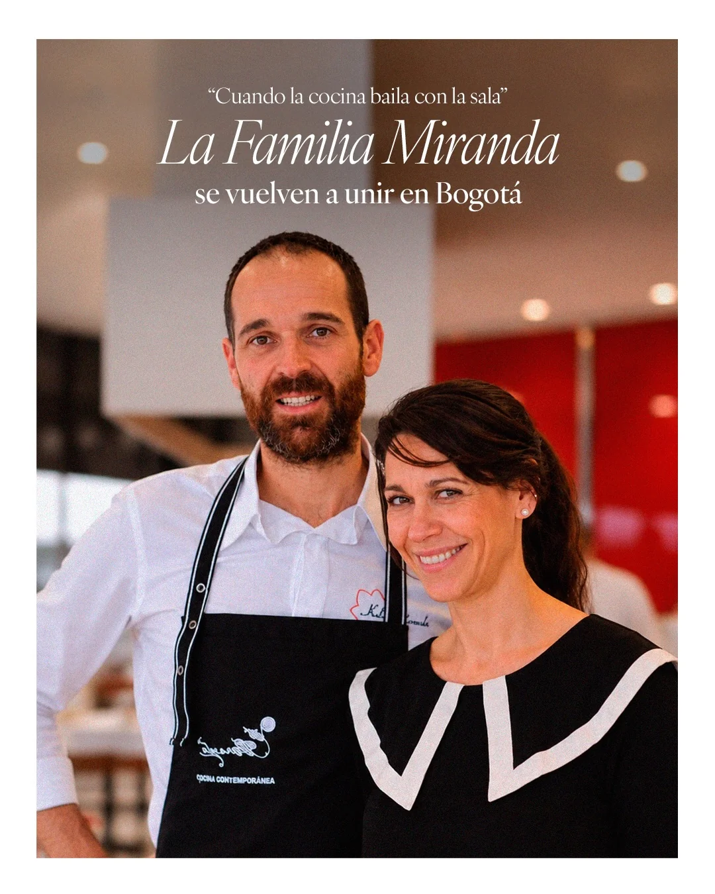

GTLAI
Koldo Miranda / tres propuestas
Presentación · Koldo Miranda
Un hilo público. Dos casas distintas.
Tres rutas creativas para explorar el vínculo público entre La Favorita y Gallinas y Valientes, sin confundir sus identidades.
Explorar las propuestasTres lecturas · Un mismo punto de partida
